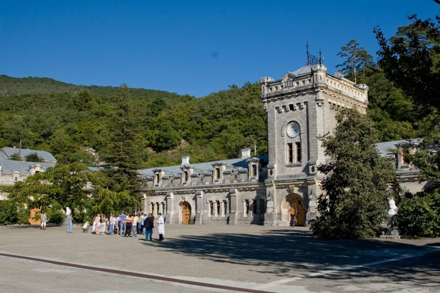
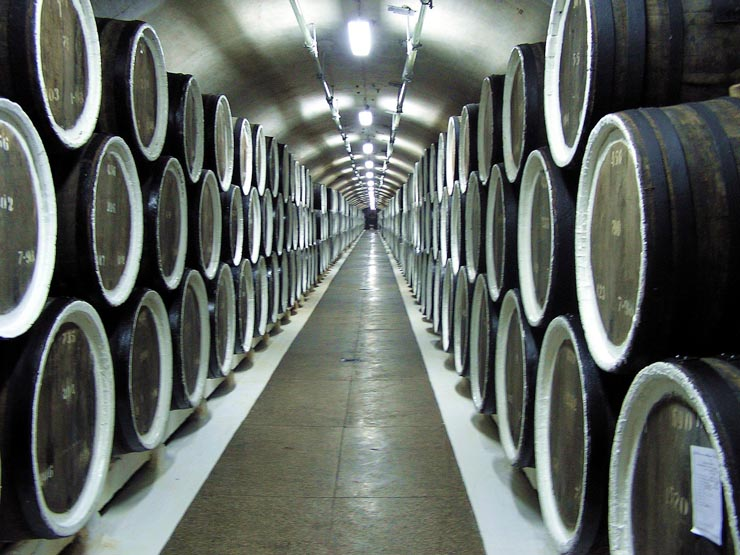
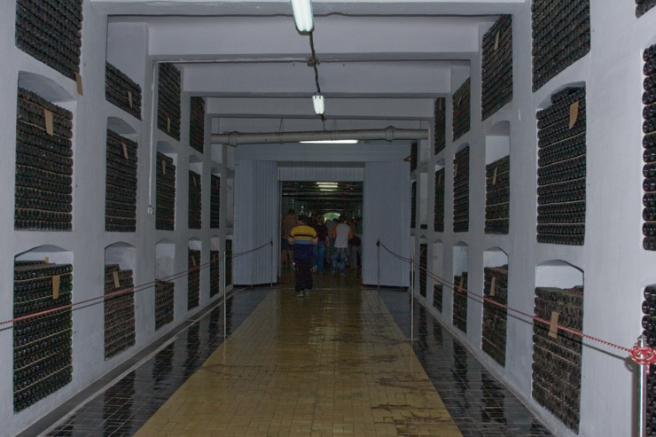
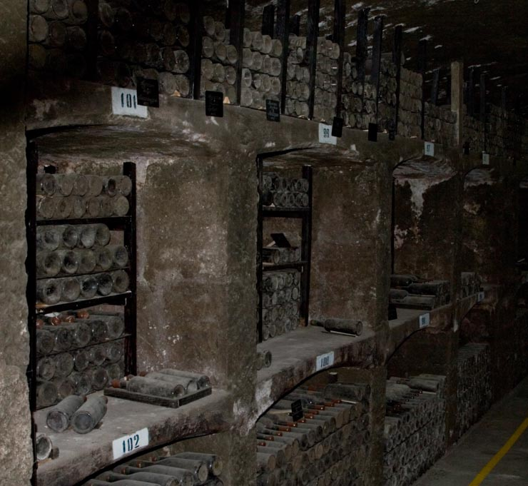
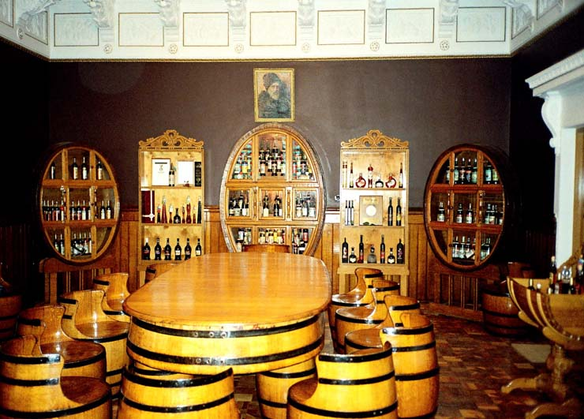
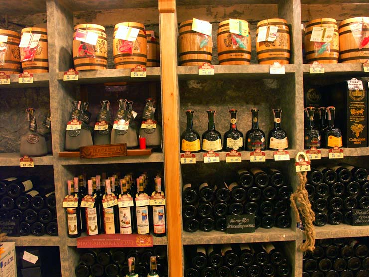
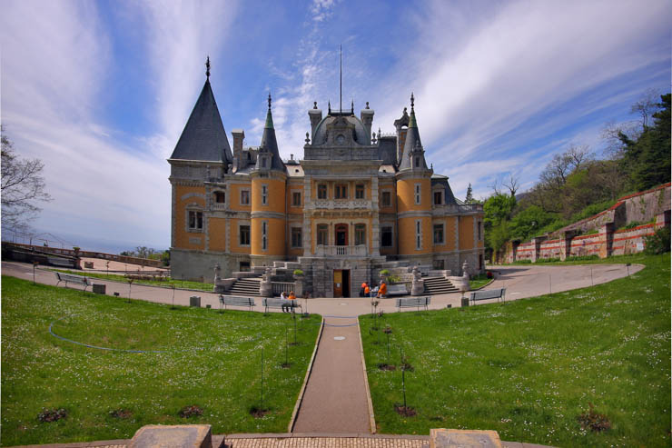
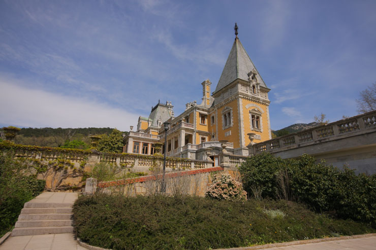
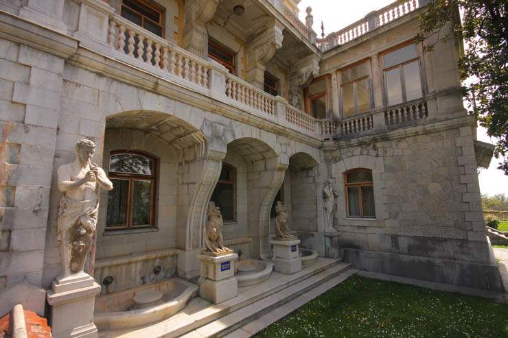

Сервис онлайн-бронирования экскурсий
14:30 — выезд от ул.Рузведьта д.1;
14:30–15:00 — дорога к Массандровскому дворцу;
15:00–16:30 — посещение массандровском дворца с парком;
16:30–16:45 — переезд к вин.заводу;
17:00–19:15 — экскурсия + дегустация + время на покупку вина;
19:15–19:30 — дорога в Ялту.
Наше путешествие начнется с посещения знаменитого романтического дворца Александра III, построенного в стиле французских замков — Массандровского дворца. Вы прогуляетесь по придворцовой территории и познакомитесь с неповторимой архитектурой дворца, увидите скульптуры сатиров, а также цветочные террасы и фигурные бассейны. Кроме осмотра роскошных интерьеров дворца и коллекции живописи, вы сможете ознакомиться с документами и фотоматериалами, рассказывающими о жизни императоров Александра III и Николая II, а также узнать историю Массандровского дворца.
Затем вы отправитесь к всемирно известному винзаводу «Массандра», заложенному князем Л.С. Голицыным в 1894 году. Вместе с гидом вы пройдете по территории винодельческого музея, познакомитесь с технологией производства массандровских вин, заглянете в подвалы царской коллекции и цеха для выдержки вин, а также продегустируете 9 марок вин.
        